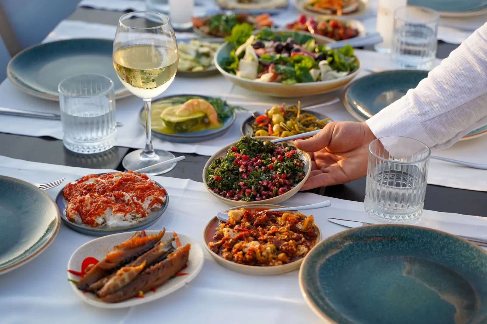
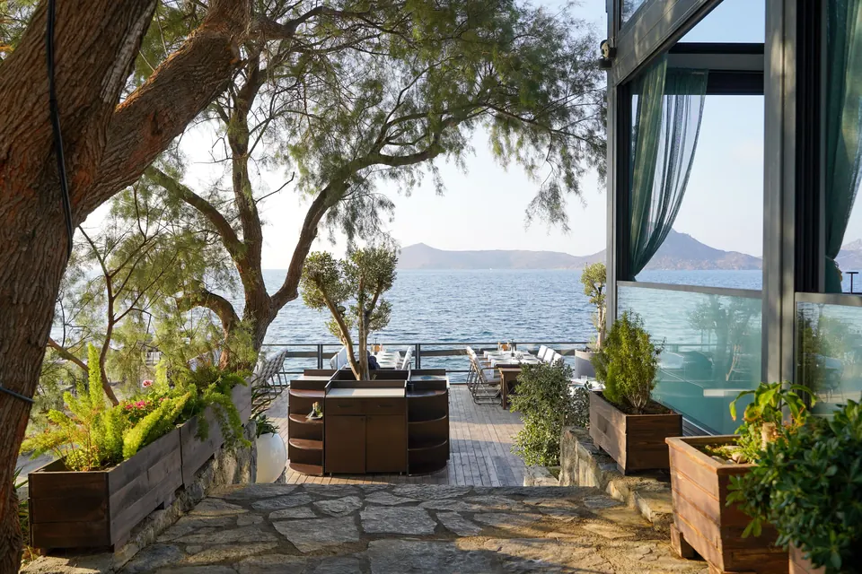
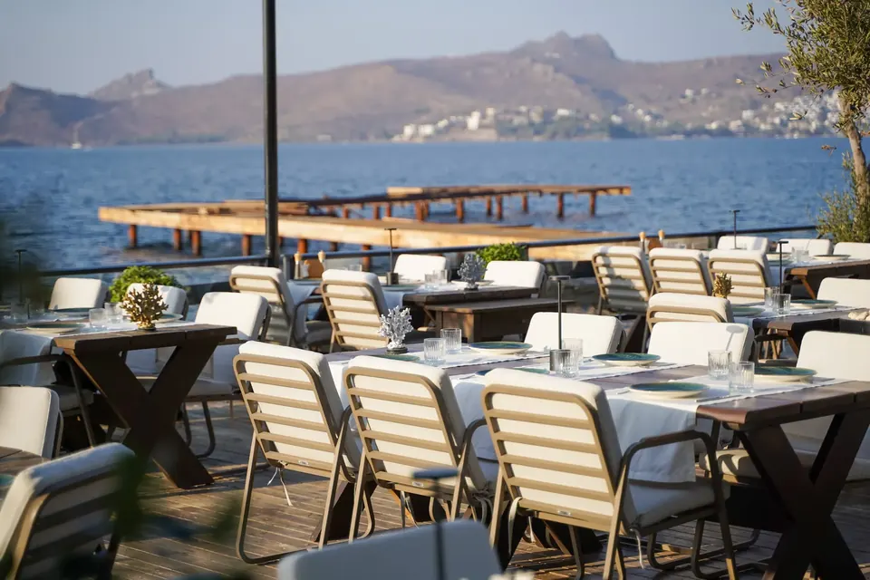
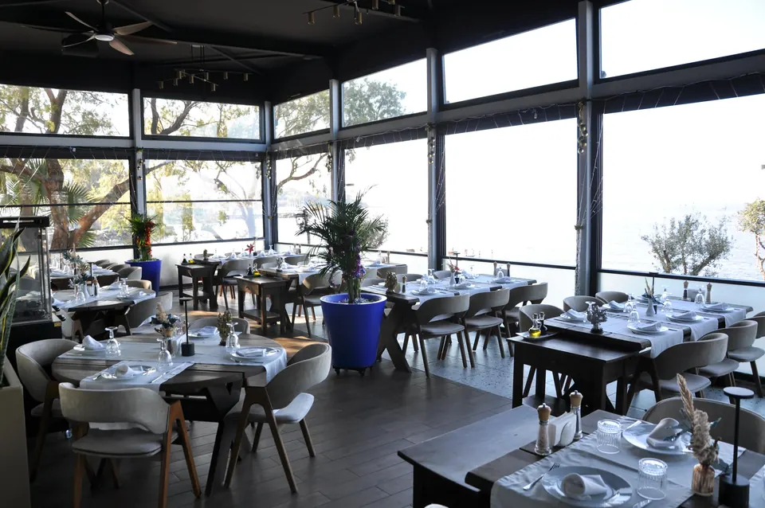
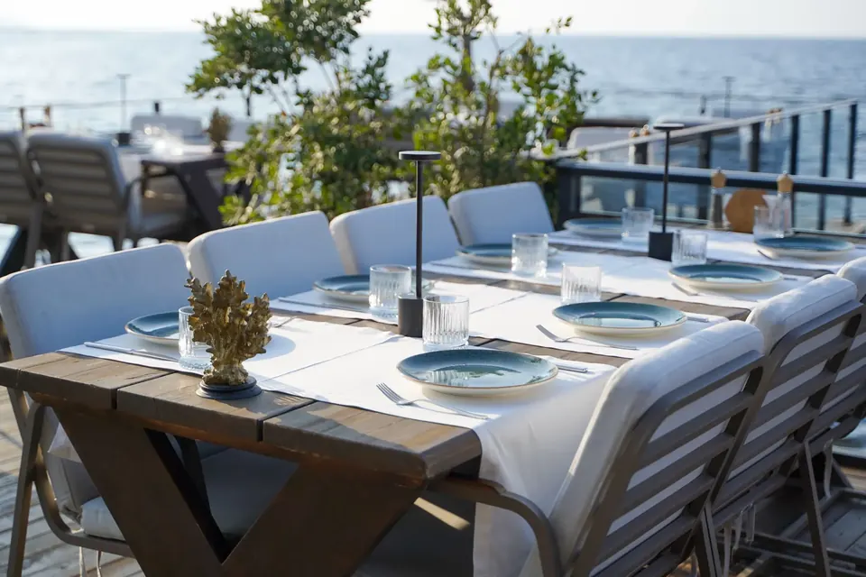
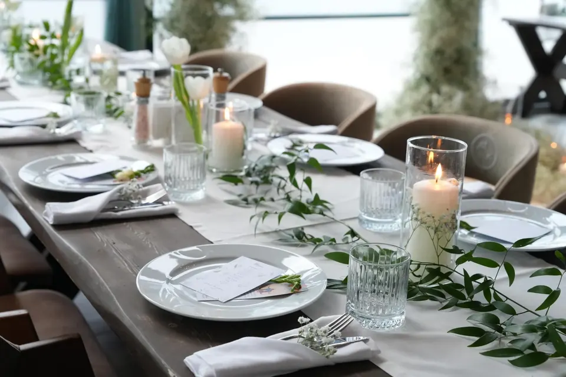
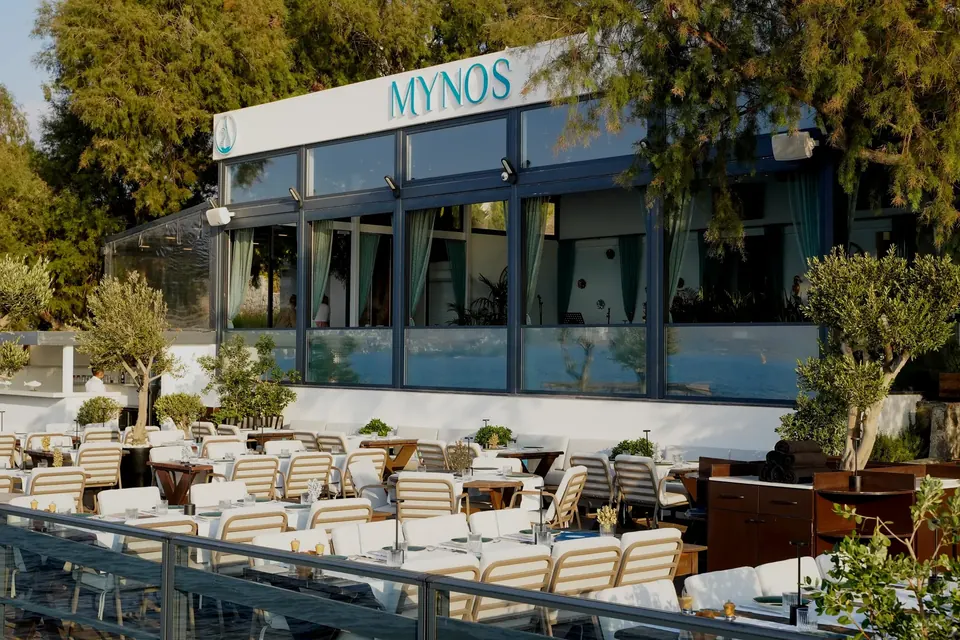

Yalıkavak sahilinde Ege sofrası
Yalıkavak'ın restoranlarla dolu sahil şeridinde zengin meze çeşitleri, taze deniz ürünleri ve Türk ile Akdeniz mutfaklarından esinlenen özgün tabaklar sunuyoruz.
- Şimdi
- SaatlerPzt-Paz 11:00–00:00
- AdresYalıkavak Mahallesi, Çökertme Cd. No:32, Bodrum, Muğla, 48990
- Telefon+90 252 385 26 00

Meze çeşitleri₺180 - ₺455
Gün batımı
Yıl boyunca masmavi Ege'nin üzerinde gün batımı.
Kahvaltı, öğle ve akşam yemeği için sizi geniş açık terasımızda ya da iç salonumuzda bekliyoruz.

Yalıkavak
Terastan, salondan
Zeytin ağaçlarının altında, deniz kıyısındaki teras ve cam cepheli iç salon.






Yalıkavak
Çökertme Caddesi'nde, deniz kıyısında
| Pazartesi | 11:00–00:00 |
|---|---|
| Salı | 11:00–00:00 |
| Çarşamba | 11:00–00:00 |
| Perşembe | 11:00–00:00 |
| Cuma | 11:00–00:00 |
| Cumartesi | 11:00–00:00 |
| Pazar | 11:00–00:00 |
- Doğum günü, yıl dönümü, nişan, düğün ve kurumsal etkinlikler için de bize yazabilirsiniz.